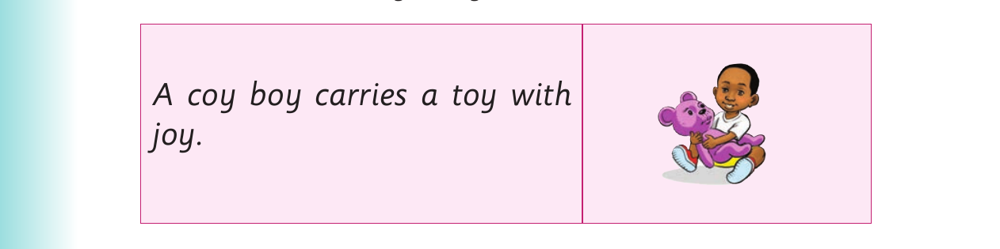
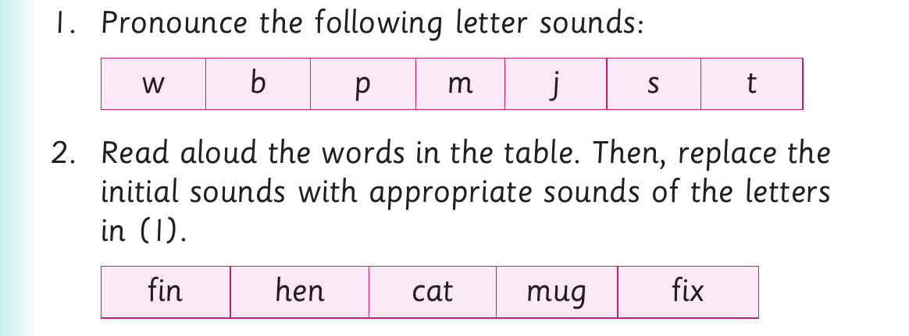

Replacing initial sounds - Activities 2 and 3
3. Replace the initial sound of each word in (1).
Example: b ox- f ox
4. Pronounce the new words you have formed in (3). 5. Read the following sentences aloud: (a) A fox is sitting near the box. (b) I bake a cake every week. (c) Look at my book. (d) That man has a pan. (e) The boy has a toy. 6. Read the following tongue twister fast:

A coy boy carries a toy with joy.
Activity 3

1. Pronounce the following letter sounds: w b p m j s t 2. Read aloud the words in the table. Then, replace the initial sounds with appropriate sounds of the letters in (1). fin hen cat mug fix
Example: f in- p in